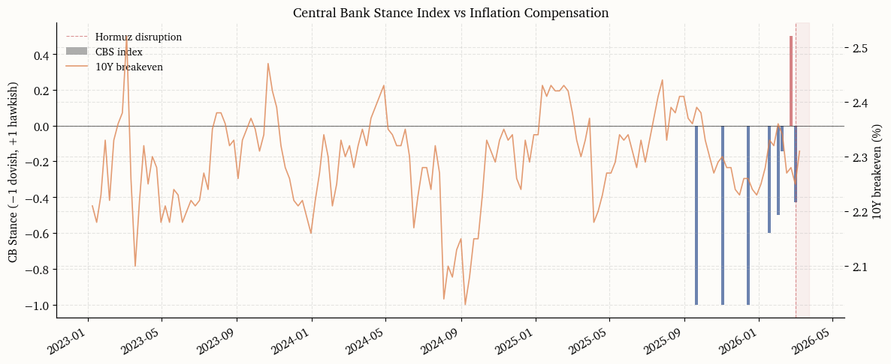

Oil Shock on Rates: Chokepoint Disruptions and the Term Structure
2026-03-05
1 Motivation
When a maritime chokepoint shuts down, the immediate market response is a spike in crude oil and freight rates. The more consequential question for fixed-income investors is whether that energy price impulse feeds through to inflation expectations and, ultimately, to the stance of monetary policy. The Strait of Hormuz disruption that began in early March 2026 offers a laboratory for studying this transmission in near-real time.
This note constructs a quantimental framework that traces the shock from physical route impairment through delivered-energy costs into the term structure of interest rates. The analysis rests on three purpose-built indices and a decomposition of yield moves into expected policy path and term premium components. An additional layer uses large-language-model extraction applied to Federal Reserve communications to quantify how policymakers’ rhetoric on supply shocks evolves alongside market pricing.
The central question is whether the rate market treats the shock as transitory, in which case the front end should be largely unmoved and the long end should adjust primarily via term premium, or whether second-round inflation risk triggers a repricing of the expected policy path.
2 Notation
Let y_t^{(n)} denote the n-year nominal Treasury yield at date t, and let r_t^{(n)} and \pi_t^{(n)} denote the corresponding TIPS real yield and breakeven inflation rate. The Fisher decomposition gives y_t^{(n)} = r_t^{(n)} + \pi_t^{(n)}, which holds as an accounting identity up to small liquidity and risk-premium wedges.
The Kim and Wright (2005) term premium estimate \text{TP}_t^{(n)} decomposes the nominal yield further as y_t^{(n)} = \bar{r}_t^{(n)} + \text{TP}_t^{(n)}, where \bar{r}_t^{(n)} is the average expected future short rate over the n-year horizon. Throughout the analysis, the 10-year maturity (n = 10) serves as the benchmark.
Three indices are constructed. The Chokepoint Disruption Index \text{CDI}_t measures the intensity of physical route impairment. The Delivered Energy and Logistics Wedge \text{DELW}_t captures the marginal cost of transporting energy beyond the benchmark crude price. The Inflation and Policy Repricing Stack \text{IPRS}_t aggregates headline inflation impulse, inflation compensation, policy-path repricing, and term premium moves into a single diagnostic. A Central Bank Stance Index \text{CBS}_t supplements the quantitative series with an AI-derived measure of Federal Reserve rhetoric on supply-shock transmission.
Code
import osimport jsonimport reimport hashlibimport textwrapfrom datetime import date, datetime, timedeltafrom pathlib import Pathimport numpy as npimport pandas as pdimport matplotlib.pyplot as pltimport matplotlib.dates as mdatesimport matplotlib.ticker as mtickerfrom cycler import cyclerfrom scipy import statsfrom dotenv import load_dotenvfrom fredapi import Fredfrom alphaforge.data.fred_source import FREDDataSourcefrom alphaforge.data.public_web.eia import EIADataSourcefrom alphaforge.data.query import Queryimport requestsfrom bs4 import BeautifulSoup# ---------------------------------------------------------------------------# Configuration# ---------------------------------------------------------------------------load_dotenv()FRED_API_KEY = os.environ["FRED_API_KEY"]EIA_API_KEY = os.environ["EIA_API_KEY"]OPENAI_API_KEY = os.environ["OPENAI_API_KEY"]fred = Fred(api_key=FRED_API_KEY)SAMPLE_START ="2023-01-01"SAMPLE_END =None# latest available# Event window for the March 2026 Hormuz disruptionEVENT_DATE = pd.Timestamp("2026-03-01")EVENT_WINDOW_PRE =20# business days before eventEVENT_WINDOW_POST =40# business days after eventCACHE_DIR = Path("_cache")CACHE_DIR.mkdir(exist_ok=True)
Code
# ---------------------------------------------------------------------------# Matplotlib house style# ---------------------------------------------------------------------------PALETTE = {"blue": "#2E5090","red": "#C44E52","green": "#4C8C4A","orange": "#DD8452","purple": "#7A68A6","grey": "#8C8C8C","teal": "#30878D","gold": "#CCB974",}COLORS =list(PALETTE.values())plt.rcParams.update( {"figure.figsize": (10, 5),"figure.facecolor": "#FDFCF9","axes.facecolor": "#FDFCF9","axes.grid": True,"axes.spines.top": False,"axes.spines.right": False,"grid.alpha": 0.3,"grid.linestyle": "--","font.family": "serif","font.serif": ["Charter", "Georgia", "Times New Roman"],"font.size": 11,"axes.titlesize": 13,"axes.labelsize": 11,"legend.fontsize": 10,"legend.frameon": False,"axes.prop_cycle": cycler(color=COLORS), })def _event_shade(ax, label="Hormuz disruption"):"""Add a shaded region marking the event window on a time-series axis.""" x_max = pd.Timestamp(mdates.num2date(ax.get_xlim()[1])).tz_localize(None) ax.axvspan(EVENT_DATE, x_max, alpha=0.07, color=PALETTE["red"], zorder=0) ax.axvline(EVENT_DATE, ls="--", lw=0.8, color=PALETTE["red"], alpha=0.6, label=label)
3 Data
The analysis draws on four families of public data. Interest-rate and inflation-compensation series come from the Federal Reserve via FRED. Energy prices and inventories are sourced from the U.S. Energy Information Administration. Policy-path pricing is derived from CME Three-Month SOFR futures settlements, with the two-year Treasury yield as an alternative proxy. Chokepoint disruption facts are compiled from Reuters, MarineTraffic, and Vortexa reporting, cross-referenced against the IMF PortWatch event page for the Strait of Hormuz.
All time series cover the period from January 2023 to the latest available observation, providing roughly three years of pre-shock baseline.
3.1 Rates and inflation compensation (FRED)
Code
# ---------------------------------------------------------------------------# FRED series -- rates, inflation compensation, oil, FX# ---------------------------------------------------------------------------FRED_SERIES = {"DGS2": "2Y nominal yield","DGS10": "10Y nominal yield","DFII10": "10Y TIPS real yield","T10YIE": "10Y breakeven inflation","THREEFYTP10": "10Y term premium (Kim-Wright)","DCOILWTICO": "WTI crude spot","DCOILBRENTEU": "Brent crude spot","GASREGW": "US regular gasoline retail (weekly)","DTWEXBGS": "Trade-weighted USD broad index",}fred_long = fetch_fred_panel(list(FRED_SERIES.keys()), start=SAMPLE_START, end=SAMPLE_END)# Pivot to wide format: columns = series IDs, index = datefred_df = ( fred_long .pivot_table(index="date", columns="series_id", values="value") .rename_axis(columns=None) .sort_index())fred_df.index = pd.to_datetime(fred_df.index).tz_localize(None)# Forward-fill weekly series into daily grid (gasoline, USD index)fred_df = fred_df.ffill()print(f"FRED data: {fred_df.shape[0]} dates x {fred_df.shape[1]} series")print(f"Date range: {fred_df.index.min():%Y-%m-%d} to {fred_df.index.max():%Y-%m-%d}")fred_df.tail()
FRED data: 825 dates x 9 series
Date range: 2023-01-02 to 2026-03-05
# ---------------------------------------------------------------------------# CME Three-Month SOFR futures — public settlement scraper# Falls back to 2Y yield (DGS2) as the policy-path proxy.# ---------------------------------------------------------------------------def fetch_sofr_settlements() -> pd.DataFrame |None:"""Attempt to scrape recent SOFR futures settlements from CME public pages. Returns a DataFrame with columns [date, contract, settlement, implied_rate] or None if the scrape fails. """ url = ("https://www.cmegroup.com/CmeWS/mvc/Settlements/Futures/Settlements/SR3""/FUT?strategy=DEFAULT&tradeDate=&is498=true" ) headers = {"User-Agent": "Mozilla/5.0 (research; academic use)"}try: resp = requests.get(url, headers=headers, timeout=15) resp.raise_for_status() data = resp.json() rows = []for s in data.get("settlements", []): settle = s.get("settle") month = s.get("month")if settle and month and settle.replace(".", "").replace("-", "").isdigit(): rate =100.0-float(settle) rows.append({"contract": month, "settlement": float(settle), "implied_rate": rate})if rows:return pd.DataFrame(rows)exceptExceptionas exc:print(f"SOFR settlement scrape failed ({exc}); falling back to DGS2 proxy.")returnNonesofr_df = fetch_sofr_settlements()if sofr_df isnotNone:print(f"SOFR futures: {len(sofr_df)} contracts retrieved") display(sofr_df.head(8)) POLICY_PROXY_LABEL ="SOFR-implied rate"else:print("Using DGS2 (2Y yield) as the policy-path proxy.") POLICY_PROXY_LABEL ="2Y yield"# Regardless, we always have DGS2 as a fallbackpolicy_path = fred_df["DGS2"].dropna().copy()policy_path.name ="policy_path"
SOFR settlement scrape failed (403 Client Error: Forbidden for url: https://www.cmegroup.com/CmeWS/mvc/Settlements/Futures/Settlements/SR3/FUT?strategy=DEFAULT&tradeDate=&is498=true); falling back to DGS2 proxy.
Using DGS2 (2Y yield) as the policy-path proxy.
3.4 Chokepoint disruption facts
The table below compiles hard facts from Reuters, MarineTraffic, and Vortexa reporting on the Strait of Hormuz disruption. Each row records a dated observation with its source. These entries anchor the Chokepoint Disruption Index constructed in the next section. The IMF PortWatch event page for the Strait of Hormuz, which uses AIS-derived traffic indicators, provides independent satellite-based confirmation of the disruption timeline.
The Chokepoint Disruption Index (CDI) converts the qualitative facts table into a single daily scalar that measures the intensity of physical route impairment. The index combines two standardized components. The first is the transit-count collapse, measured as the z-score of the logarithm of daily transits relative to a trailing baseline. The second is the anchored-vessel spike, standardized in the same way. Formally,
where z_t^{\text{transit}} is the standardized transit shortfall (inverted so that fewer transits yield a higher score) and z_t^{\text{anchor}} is the standardized anchored-vessel count. The weights reflect the primacy of actual traffic flow over the anchoring indicator, which can lag. The raw composite is rescaled to [0, 1] using its observed range.
The Delivered Energy and Logistics Wedge (DELW) captures the marginal cost of transporting crude oil beyond the benchmark price. When a chokepoint closes, the wedge between the landed cost of a barrel and its exchange-traded benchmark widens through two channels: freight rates jump as vessels reroute, and war-risk insurance either becomes prohibitively expensive or unavailable entirely.
The index is built from two components. The first is a freight-cost proxy measured by the Brent–WTI spread, which widens when Atlantic Basin buyers must pay a premium to source barrels via longer routes. This is an imperfect but publicly available and daily-frequency substitute for the Baltic TD3C assessment. The second is a binary insurance-stress indicator derived from the chokepoint facts table, set to one on dates when major P&I clubs have cancelled or withdrawn war-risk cover. The composite is
The Inflation and Policy Repricing Stack (IPRS) organizes the rate-market response into four layers, each capturing a distinct channel through which an oil shock can propagate. The four components are computed as daily changes and presented in a stacked decomposition.
The headline impulse layer measures the immediate cost-push signal. It is the standardized daily change in retail gasoline and crude oil prices, which are the energy inputs most visible to households and most likely to influence survey-based inflation expectations.
The inflation-compensation layer tracks the repricing of market-implied inflation via the 10-year breakeven rate \pi_t^{(10)}. A sustained widening here would signal that the market is no longer treating the shock as transitory.
The policy-path layer uses the two-year yield (or SOFR-implied forward when available) to capture changes in the expected trajectory of the federal funds rate. If the Fed is expected to look through the shock, this component should remain flat.
The term-premium layer uses the Kim–Wright estimate \text{TP}_t^{(10)}. A supply shock that raises uncertainty about the inflation outlook should appear here even if expected policy rates are unchanged.
Two complementary decompositions illuminate the channels through which the oil shock feeds into long-term rates.
7.1 Nominal = Real + Breakeven
The Fisher identity y_t^{(10)} = r_t^{(10)} + \pi_t^{(10)} splits the 10-year nominal yield into its real-rate and inflation-compensation components. Computing cumulative changes from a pre-shock reference date reveals whether the yield move is driven by higher real rates (perhaps reflecting tighter expected policy) or wider inflation compensation (reflecting higher inflation risk premia or shifted expectations).
7.2 Expected path and term premium
The Kim–Wright decomposition separates the 10-year yield into an average expected short-rate component \bar{r}_t^{(10)} and a term premium \text{TP}_t^{(10)}. Any move in the 10-year yield that is not explained by the term premium is attributed to a shift in the expected policy path. If central banks are credibly expected to look through the shock, the expected-path component should remain stable and the term premium should absorb most of the long-end volatility.
The transmission of oil shocks to interest rates is not constant. A central insight from Blanchard and Galí (2007) and Bernanke, Reinhart, and Sack (2004) is that the macroeconomic response depends on the credibility of the central bank’s commitment to price stability. When recent inflation has been elevated and long-run inflation expectations are less firmly anchored, an oil supply shock is more likely to trigger second-round effects and, consequently, a larger policy-path response.
To evaluate this state dependence, the trailing 60-day average of the 10-year breakeven rate serves as a conditioning variable. The idea is that a high baseline breakeven signals fragile credibility, making the rate market more sensitive to energy-driven inflation impulses. The chart below shows the relationship between the pre-shock breakeven level and the cumulative yield response in the first five trading days after the event.
The quantitative indices developed above measure what markets are doing. This section adds a complementary measure of what policymakers are saying, specifically about supply-shock transmission and second-round inflation risk. The Central Bank Stance Index (\text{CBS}_t) is derived from Federal Reserve speeches and FOMC statements using large-language-model extraction.
The pipeline proceeds in three stages. First, the full text of each public speech and statement from the Federal Reserve Board website is scraped for the period January 2025 through the present. Second, each document is chunked into segments of roughly 800 tokens and scored by an LLM along two dimensions: topic relevance (whether the chunk discusses energy, oil, inflation expectations, supply shocks, or look-through language) and policy stance on supply-shock transmission (dovish, neutral, or hawkish). Third, the chunk-level scores are aggregated to a weekly index.
The resulting index does not predict policy. Its value lies in tracking how the Fed’s narrative on supply-shock risk evolves, and whether that narrative leads or lags the market-implied repricing observed in the IPRS.
8.1 Scraping Fed speeches and statements
Code
# ---------------------------------------------------------------------------# Scrape Federal Reserve speeches and FOMC statements# ---------------------------------------------------------------------------import timeimport xml.etree.ElementTree as ETSPEECHES_CACHE = CACHE_DIR /"fed_speeches.json"CB_SCRAPE_START = date(2025, 1, 1)def scrape_fed_speeches(start_date: date) ->list[dict]:"""Scrape speech metadata and full text from the Fed RSS feed. The speeches page HTML structure changes often, while the official RSS feed is stable and provides canonical speech/testimony links and publication dates. Each linked page is fetched to recover the full text and speaker. """ feed_url ="https://www.federalreserve.gov/feeds/speeches_and_testimony.xml" base ="https://www.federalreserve.gov" headers = {"User-Agent": "Mozilla/5.0 (research; academic use)"} resp = requests.get(feed_url, headers=headers, timeout=30) resp.raise_for_status() root = ET.fromstring(resp.content) speeches = []for item in root.findall("./channel/item"): title = (item.findtext("title") or"").strip() link = (item.findtext("link") or"").strip() pub_date = (item.findtext("pubDate") or"").strip()ifnot link:continuetry: speech_date = pd.to_datetime(pub_date).date()exceptException:continueif speech_date < start_date:continueifnot link.startswith("http"): link = base + link speeches.append({"date": speech_date.isoformat(),"speaker": "Unknown","title": title,"url": link,"text": None, })for sp in speeches:try: r = requests.get(sp["url"], headers=headers, timeout=30) r.raise_for_status() page = BeautifulSoup(r.text, "html.parser") article = page.select_one("#article, .col-xs-12.col-sm-8.col-md-8, .article")if article: sp["text"] = article.get_text(separator="\n", strip=True)else: sp["text"] = page.get_text(separator="\n", strip=True)[:20000] speaker_el = page.select_one(".speaker, .article__speaker, h3")if speaker_el: sp["speaker"] = speaker_el.get_text(strip=True) time.sleep(0.25)exceptExceptionas exc: sp["text"] =f"[Fetch failed: {exc}]"return speechesdef scrape_fomc_statements(start_date: date) ->list[dict]:"""Scrape only canonical FOMC statement pages from the Fed calendar page.""" base ="https://www.federalreserve.gov" cal_url =f"{base}/monetarypolicy/fomccalendars.htm" headers = {"User-Agent": "Mozilla/5.0 (research; academic use)"} resp = requests.get(cal_url, headers=headers, timeout=30) resp.raise_for_status() soup = BeautifulSoup(resp.text, "html.parser") statements = [] seen =set() canonical_pattern = re.compile(r"/newsevents/pressreleases/monetary(\d{8})a\.htm$")for link in soup.select("a[href*='pressreleases/monetary']"): href = link.get("href", "")ifnot href:continueifnot href.startswith("http"): href = base + href match = canonical_pattern.search(href)ifnot match:continueif href in seen:continue seen.add(href)try: stmt_date = datetime.strptime(match.group(1), "%Y%m%d").date()exceptValueError:continueif stmt_date < start_date:continue statements.append({"date": stmt_date.isoformat(),"speaker": "FOMC","title": f"FOMC Statement {stmt_date.isoformat()}","url": href,"text": None, })for st in statements:try: r = requests.get(st["url"], headers=headers, timeout=30) r.raise_for_status() page = BeautifulSoup(r.text, "html.parser") article = page.select_one("#article, .col-xs-12.col-sm-8.col-md-8, .article")if article: st["text"] = article.get_text(separator="\n", strip=True)else: st["text"] = page.get_text(separator="\n", strip=True)[:20000] time.sleep(0.25)exceptExceptionas exc: st["text"] =f"[Fetch failed: {exc}]"return statementsdef load_or_refresh_cb_corpus(force_refresh: bool=False, min_docs: int=10) ->list[dict]:if SPEECHES_CACHE.exists() andnot force_refresh:withopen(SPEECHES_CACHE) as f: cached = json.load(f)iflen(cached) >= min_docs:print(f"Loaded {len(cached)} documents from cache.")return cachedprint(f"Cache only contains {len(cached)} documents; refreshing.") speeches = scrape_fed_speeches(CB_SCRAPE_START) statements = scrape_fomc_statements(CB_SCRAPE_START) corpus = speeches + statements corpus.sort(key=lambda x: x["date"])withopen(SPEECHES_CACHE, "w") as f: json.dump(corpus, f, indent=2)print(f"Scraped and cached {len(corpus)} documents ({len(speeches)} speeches, {len(statements)} statements).")return corpuscb_corpus = load_or_refresh_cb_corpus(force_refresh=True)print("\nCorpus summary:")print(f" Date range: {cb_corpus[0]['date']} to {cb_corpus[-1]['date']}")print(f" Total documents: {len(cb_corpus)}")print(f" Speakers sampled: {', '.join(sorted(set(d['speaker'] for d in cb_corpus[:10])))}")
Scraped and cached 25 documents (15 speeches, 10 statements).
Corpus summary:
Date range: 2025-01-29 to 2026-03-03
Total documents: 25
Speakers sampled: FOMC, Regulations, the Supply Side, and Monetary Policy
8.2 LLM stance scoring
Code
# ---------------------------------------------------------------------------# LLM stance scoring via OpenAI (gpt-4o-mini for cost efficiency)# Results are cached to a local JSON file so re-renders are free.# ---------------------------------------------------------------------------from openai import OpenAISTANCE_CACHE = CACHE_DIR /"cb_stance_scores.json"STANCE_PROMPT = textwrap.dedent("""\ You are an expert monetary policy analyst. Given the following excerpt from a Federal Reserve speech or FOMC statement, classify the stance on supply-side inflation shocks (specifically oil/energy supply disruptions). Return a JSON object with exactly these fields:{{ "topics": ["list of relevant topics from: energy, oil, inflation_expectations, second_round, supply_shock, term_premium, uncertainty, look_through"], "stance": "DOVISH" or "NEUTRAL" or "HAWKISH", "confidence": "LOW" or "MEDIUM" or "HIGH", "key_quote": "most relevant sentence from the text (max 200 chars)"}} DOVISH means the speaker signals transitory / look-through / accommodation. HAWKISH means concern about second-round effects / expectations unanchoring. NEUTRAL means balanced or no clear signal on supply shocks. If the text does not discuss energy, oil, inflation, or supply shocks at all, return stance="NEUTRAL", confidence="LOW", topics=[], key_quote="". Text: ---{chunk} --- JSON:""")STANCE_MAP = {"DOVISH": -1, "NEUTRAL": 0, "HAWKISH": 1}def chunk_text(text: str, max_chars: int=3000) ->list[str]:"""Split text into chunks of roughly max_chars, breaking at paragraph boundaries.""" paragraphs = text.split("\n") chunks, current = [], ""for para in paragraphs:iflen(current) +len(para) > max_chars and current: chunks.append(current.strip()) current ="" current += para +"\n"if current.strip(): chunks.append(current.strip())return chunksdef score_chunk(client: OpenAI, chunk: str) ->dict:"""Score a single text chunk using gpt-4o-mini.""" prompt = STANCE_PROMPT.format(chunk=chunk[:4000]) response = client.chat.completions.create( model="gpt-4o-mini", messages=[{"role": "user", "content": prompt}], temperature=0.0, max_tokens=300, response_format={"type": "json_object"}, )try:return json.loads(response.choices[0].message.content)except (json.JSONDecodeError, IndexError):return {"topics": [], "stance": "NEUTRAL", "confidence": "LOW", "key_quote": ""}def score_document(client: OpenAI, doc: dict) ->dict:"""Score all chunks in a document and return aggregated result.""" text = doc.get("text", "")ifnot text or text.startswith("[Fetch failed"):return {"doc_stance": 0.0, "n_chunks": 0, "n_relevant": 0, "chunks": []} chunks = chunk_text(text) scored_chunks = []for chunk in chunks: result = score_chunk(client, chunk) result["numeric_stance"] = STANCE_MAP.get(result.get("stance", "NEUTRAL"), 0) scored_chunks.append(result) conf_weights = {"LOW": 0.25, "MEDIUM": 0.5, "HIGH": 1.0} relevant = [c for c in scored_chunks if c.get("topics")]if relevant: weights = [conf_weights.get(c.get("confidence", "LOW"), 0.25) for c in relevant] stances = [c["numeric_stance"] for c in relevant] doc_stance = np.average(stances, weights=weights)else: doc_stance =0.0return {"doc_stance": float(doc_stance),"n_chunks": len(scored_chunks),"n_relevant": len(relevant),"chunks": scored_chunks, }def load_cached_scores(expected_docs: int) ->list[dict] |None:ifnot STANCE_CACHE.exists():returnNonewithopen(STANCE_CACHE) as f: cached = json.load(f)iflen(cached) != expected_docs:print(f"Stance cache has {len(cached)} docs but corpus has {expected_docs}; refreshing.")returnNoneprint(f"Loaded {len(cached)} scored documents from cache.")return cachedstance_results = load_cached_scores(len(cb_corpus))if stance_results isNone: client = OpenAI(api_key=OPENAI_API_KEY) stance_results = []for i, doc inenumerate(cb_corpus):print(f" Scoring {i +1}/{len(cb_corpus)}: {doc['title'][:60]}...") result = score_document(client, doc) result["date"] = doc["date"] result["speaker"] = doc["speaker"] result["title"] = doc["title"] stance_results.append(result)withopen(STANCE_CACHE, "w") as f: json.dump(stance_results, f, indent=2, default=str)print(f"\nScored and cached {len(stance_results)} documents.")print(f"Documents scored: {len(stance_results)}")print(f"Documents with relevant chunks: {sum(1for r in stance_results if r['n_relevant'] >0)}")
Stance cache has 35 docs but corpus has 25; refreshing.
Scoring 1/25: FOMC Statement 2025-01-29...
Scoring 2/25: FOMC Statement 2025-03-19...
Scoring 3/25: FOMC Statement 2025-05-07...
Scoring 4/25: FOMC Statement 2025-06-18...
Scoring 5/25: FOMC Statement 2025-07-30...
Scoring 6/25: FOMC Statement 2025-08-22...
Scoring 7/25: FOMC Statement 2025-09-17...
Scoring 8/25: FOMC Statement 2025-10-29...
Scoring 9/25: FOMC Statement 2025-12-10...
Scoring 10/25: Miran, Regulations, the Supply Side, and Monetary Policy...
Scoring 11/25: Jefferson, Economic Outlook and Monetary Policy Implementati...
Scoring 12/25: Bowman, Outlook for the Economy and Monetary Policy...
Scoring 13/25: FOMC Statement 2026-01-28...
Scoring 14/25: Bowman, Outlook for the Economy and Monetary Policy...
Scoring 15/25: Waller, Statement by Governor Christopher J. Waller...
Scoring 16/25: Cook, Economic Outlook...
Scoring 17/25: Jefferson, Economic Outlook and Supply-Side (Dis)Inflation D...
Scoring 18/25: Bowman, Revitalizing Bank Mortgage Lending, One Step with Ba...
Scoring 19/25: Barr, What Will Artificial Intelligence Mean for the Labor M...
Scoring 20/25: Bowman, Opening Remarks...
Scoring 21/25: Waller, Labor Market Data: Signal or Noise?...
Scoring 22/25: Cook, Opening Remarks for the “AI and Productivity across th...
Scoring 23/25: Waller, Operationalizing AI at the Federal Reserve...
Scoring 24/25: Bowman, Supervision and Regulation...
Scoring 25/25: Bowman, Liquidity Resiliency, Financial Stability, and the R...
Scored and cached 25 documents.
Documents scored: 25
Documents with relevant chunks: 17
8.3 Stance index construction and overlay
Code
# ---------------------------------------------------------------------------# Aggregate to weekly Central Bank Stance (CBS) index# ---------------------------------------------------------------------------stance_df = pd.DataFrame([ {"date": pd.Timestamp(r["date"]), "stance": r["doc_stance"], "n_relevant": r["n_relevant"]}for r in stance_results])stance_df = stance_df.set_index("date").sort_index()# Weekly aggregation (mean stance, weighted by document relevance)weekly_stance = ( stance_df .resample("W") .apply(lambda g: np.average(g["stance"], weights=np.maximum(g["n_relevant"], 1)) iflen(g) >0else np.nan))weekly_stance = weekly_stance.dropna()weekly_stance.name ="CBS"# Plot: CBS index overlaid with breakeven and policy-path changesfig, ax1 = plt.subplots(figsize=(12, 5))# CBS index (bar chart)colors_bar = [PALETTE["red"] if v >0else PALETTE["blue"] if v <0else PALETTE["grey"]for v in weekly_stance.values]ax1.bar(weekly_stance.index, weekly_stance.values, width=5, color=colors_bar, alpha=0.7, label="CBS index")ax1.set_ylabel("CB Stance (−1 dovish, +1 hawkish)")ax1.axhline(0, color="black", lw=0.4)_event_shade(ax1)# Overlay: breakeven (right axis)ax2 = ax1.twinx()be_weekly = fred_df["T10YIE"].resample("W").last().dropna()ax2.plot(be_weekly.index, be_weekly.values, color=PALETTE["orange"], lw=1.2, alpha=0.8, label="10Y breakeven")ax2.set_ylabel("10Y breakeven (%)")ax1.set_title("Central Bank Stance Index vs Inflation Compensation")lines1, labels1 = ax1.get_legend_handles_labels()lines2, labels2 = ax2.get_legend_handles_labels()ax1.legend(lines1 + lines2, labels1 + labels2, loc="upper left")fig.autofmt_xdate()plt.tight_layout()plt.show()

9 Event Study
This section brings together the three indices and the yield decomposition in a single event-study window centered on the onset of the Hormuz disruption. The window spans 20 business days before the event through 40 business days after, capturing both the pre-shock baseline and the full initial market response.
The purpose of this consolidated view is to answer the central question posed in the introduction: does the rate market treat the shock as transitory (stable front end, term-premium-driven long end) or does it price second-round inflation risk (breakeven widening, policy-path repricing)?
The analysis above traces the March 2026 Hormuz disruption from the physical chokepoint through delivered-energy costs and into the term structure of interest rates. Three scenarios frame the interpretation.
The first scenario, transitory look-through, holds if the front end of the curve remains stable, breakevens widen only modestly, and the bulk of the long-end yield move is absorbed by the Kim–Wright term premium. Under this reading, the market expects central banks to look through the energy price spike, and the yield-curve reaction is dominated by uncertainty pricing rather than policy-path repricing.
The second scenario, second-round risk, applies if breakevens widen persistently and the two-year yield (or SOFR-implied forwards) moves significantly higher. This pattern would indicate that the market expects the inflation impulse to feed through to broader price pressures, forcing a tighter policy path even as the supply shock itself may be temporary.
The third scenario, term-premium shock, describes a situation where both the expected-path and term-premium components move, but the term premium accounts for a disproportionate share. This would suggest that the market is not so much repricing the policy path as demanding additional compensation for the elevated tail risk of a sustained inflation regime shift.
The data needed to adjudicate among these scenarios are, for the most part, available in real time. The IPRS decomposition presented here can be updated daily. The Central Bank Stance Index, refreshed as new speeches and statements are published, provides a leading indicator of whether the Fed’s rhetoric is shifting from look-through language toward second-round concern. A decisive shift in the CBS index, particularly if accompanied by widening breakevens and front-end repricing, would be the clearest signal that the transitory interpretation has broken down.
Bernanke, Ben S., Vincent R. Reinhart, and Brian P. Sack. 2004. “Monetary Policy Alternatives at the Zero Bound: An Empirical Assessment.”Brookings Papers on Economic Activity 2004 (2): 1–100. https://doi.org/10.1353/eca.2005.0002.
Blanchard, Olivier J., and Jordi Galí. 2007. “The Macroeconomic Effects of Oil Price Shocks: Why Are the 2000s so Different from the 1970s?”NBER Working Paper, no. 13368 (August). https://doi.org/10.3386/w13368.